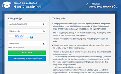
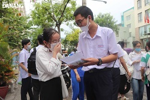

TUYỂN SINH - THI CỬ:
| Các mốc thời gian quan trọng tiếp theo trong xét tuyển đại học 2022: | |
|---|---|
| Bộ Giáo dục và Đào tạo vừa có thông báo về các mốc thời gian tiếp theo trong quá trình xét tuyển đại học 2022. | |
| Những mốc thời gian thí sinh cần chú ý khi xét tuyển đại học năm 2022 | |
| Kế hoạch triển khai công tác tuyển sinh đại học, tuyển sinh cao đẳng ngành Giáo dục Mầm non năm 2022 của Bộ Giáo dục và Đào tạo đã đề ra các mốc thời gian cụ thể mà thí sinh cần lưu ý. | |
| Cách tra cứu điểm thi tốt nghiệp THPT 2022 nhanh và chính xác nhất | |
|  | Dự kiến, Bộ Giáo dục và Đào tạo chính thức công bố điểm thi tốt nghiệp THPT 2022 cho thí sinh vào ngày 24-7. Để giúp thí sinh tra cứu điểm thi tốt nghiệp THPT một cách nhanh và chính xác nhất, báo Tin tức giới thiệu một số cách sau.. |
| Công bố danh sách máy tính bỏ túi được đem vào phòng thi tốt nghiệp THPT | |
| Bộ Giáo dục và Đào tạo vừa công bố danh sách một số máy tính bỏ túi được đem vào phòng thi tốt nghiệp Trung học Phổ thông năm 2022. | |
| Thí sinh đăng ký thi tốt nghiệp THPT 2022 từ ngày 4-5 | |
|  | Ngày 20-4, Bộ Giáo dục và đào tạo (GD&ĐT) công bố Hướng dẫn tổ chức thi tốt nghiệp THPT năm 2022. Theo đó, thí sinh đang là học sinh lớp 12 năm nay sẽ đăng ký dự thi bằng hình thức trực tuyến từ ngày 4 đến hết 13-5. |